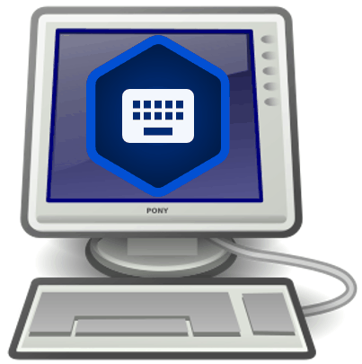

BTT Writer for the Desktop: Performing Translation¶
{kind=link}
Watch the Videos¶
The Translation Process¶
A basic translation process for any unfoldingWord project is explained here.
As you translate, be sure that you:
Pray that God would help you make an easily-understandable, Scripturally-accurate translation
Translate everything that is in the source text language.
Do not add anything that that is not necessary for comprehension.
Always do your translation according to the Translation Guidelines.
Always do your translation according to the Statement of Faith.
Use the translationNotes and the translationWords (see Translations) to help you make a better translation. These resources are also available within BTT Writer, in the Edit-Review view of the project.
Working in a Text Project¶
You can create and edit translations of Open Bible Stories or books of the Bible. To write the translation in your language:
Translate¶
For the initial translation, use Blind Edit Mode, which is organized to work with blind drafting. To use Blind Edit Mode, see How do I set up to translate the Bible or Open Bible Stories?
You may want to read https://bibleineverylanguage.org/processes/mast/ to understand the steps of blind drafting translation.
Open the project for the story or book that is being translated and click the Read view icon.
The screen of the Read view is arranged to appear like two sheets of paper, one behind the other, with the Chapter or Story view initially on top. In this view, read the source text, consuming the entire chapter.
Verbally retell what you have read to another person, preferably using the target language.
When you are ready to begin translating, click the Blind Edit icon.
Note: This icon is available only if you are using Blind Edit Mode. See BTT Writer for the Desktop: Modifying Program Settings.
The Blind Edit view appears and displays the text divided into chunks, which are sections that you should be able to retell without looking. Read a chunk over until you can remember what it says.
For the chunk you want to translate, click the blank paper behind the one containing the text.
Type in the translation for that chunk on the page. This should not be a word-for-word translation, but it should be expressed in a way that would sound natural to a native speaker of the language.
Start translating with a blind draft. Draft the chunk as well as you can without looking back at the text.
Write everything that you remember about that chunk.
Do not look back at the source text for this chunk until you begin the editing steps.
When you are finished working, navigate to the next chunk.
Continue doing this with each chunk of the chapter before moving to the checking steps.
When you use BTT Writer, your work is saved automatically every five minutes.
Check and Edit Translated Text¶
Use the Edit-Review view to edit existing work that you or another translator created. To enter the Edit-Review view, click the Edit-Review view icon, which looks like 3 vertical lines, at the left of the page.
In the Edit-Review view the source text is on the left and the translation work is on the right. You can compare the two and then edit the translation to include all details in the source text.
In the Edit-Review view you can access all of the translationNotes, translationWords and translationQuestions that have been included in the program. See Resources for more information.
If you need to make changes in the translated text, perform the following steps:
Click the pencil icon at the top right of the translated chunk.
Edit the text to include all details and correct any grammatical or spelling errors.
Click the check mark icon when done editing.
Place the verse markers (skip this step if you are translating Open Bible Stories, which are not divided into verses).
There is a verse marker for each verse in the chunk.
Click and hold each verse marker and drag it to the beginning of each verse, dropping it on the first word of the verse.
Continue until all verses are marked with a verse number.
When you are finished working, use the toggle at the bottom of the chunk to mark the translation of that chunk done. Click the toggle to indicate that the chunk is finished.
A message appears for you to confirm that the chunk is done. Click Confirm to indicate that the work is done, or click Cancel to continue editing.
At any time you can click the toggle to edit the chunk again. Use the above steps to edit.
Working in a Resources Project¶
If you are translating resources (translationNotes, translationWords, or translationQuestions), you must have created your project in Gateway Language Mode (see How do I set up to translate Bible resources? and How do I select the project category?.
Translating translationNotes¶
See Translating translationNotes for Gateway Languages Using BTT Writer
Translating translationWords¶
See Translating translationWords for Gateway Languages Using BTT Writer
Translating translationQuestions¶
See Translating translationQuestions for Gateway Languages Using BTT Writer
Recover Deleted Translation Text¶
If you accidentally delete a large amount of work, send email to helpdesk@techadvancement.com.